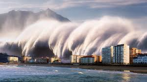

Overview
|
A tsunami is a series of waves in a water body caused by the displacement of a large volume of water, generally in an ocean or a large lake. Earthquakes, volcanic eruptions, and underwater explosions (including detonations, landslides, glacier calvings, meteorite impacts, and other disturbances) above or below water all have the potential to generate a tsunami. Unlike normal ocean waves, which are generated by wind, or tides, which are in turn generated by the gravitational pull of the Moon and the Sun, a tsunami is generated by the displacement of water from a large event. |
 |
Precautions - Before and After a Tsunami
Do's Before a Tsunami
Stay Informed:
Keep updated with weather forecasts and tsunami warnings through reliable sources such as government agencies.

Identify Safe Zones:
Know evacuation routes and higher ground areas in your locality.

Emergency Kit:
Prepare an emergency kit with essentials like water, non-perishable food, first-aid supplies, and a flashlight.
Do's After a Tsunami
Avoid Flooded Areas:
Stay away from debris-filled and flooded areas as they may pose health risks.

Listen for Updates:
Stay tuned to local authorities for updates on safety and relief operations.
Assist Others:
Help those in need, especially elderly, children, and injured individuals.

Preparedness
-
Develop a family emergency plan and practice evacuation drills.

-
Stay connected to community warning systems for real-time alerts.
-
Strengthen buildings to withstand natural disasters.

-
Learn basic first-aid techniques and CPR to assist during emergencies.

-
Establish a communication plan to contact loved ones during a disaster.